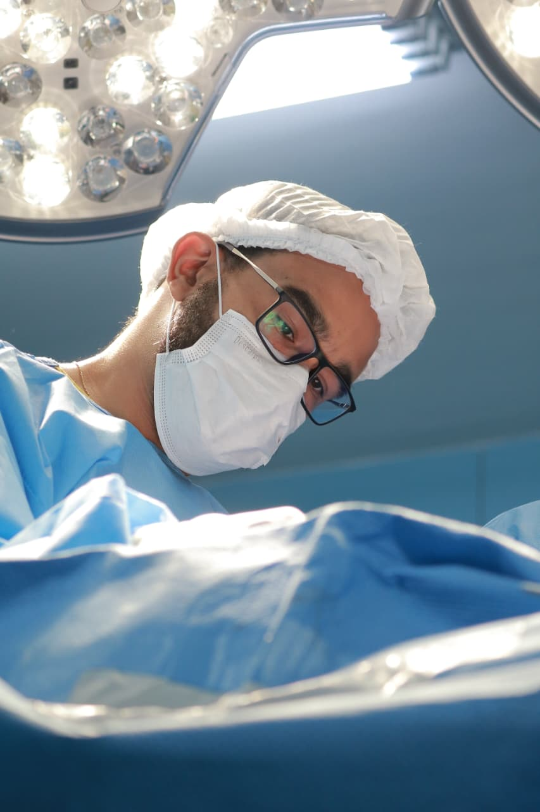
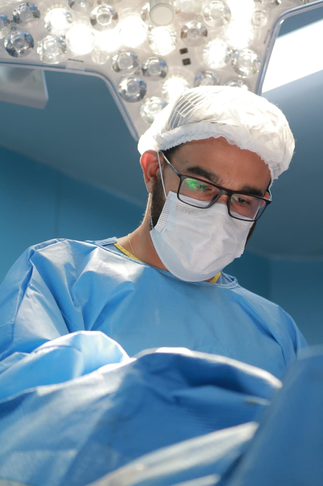
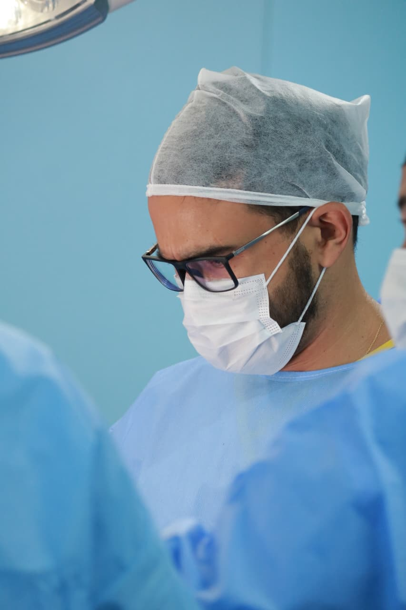

Dor no quadril
Para quem sente dor ao caminhar, levantar da cadeira, subir escadas ou permanecer muito tempo em pé.
Agende uma avaliação com o Dr. Luiz Sarmanho, ortopedista com atuação em trauma, quadril, artroplastia total e procedimentos ortopédicos relacionados à dor.
Para quem sente dor ao caminhar, levantar da cadeira, subir escadas ou permanecer muito tempo em pé.
Avaliação do grau de desgaste, impacto na rotina e possibilidades de tratamento conforme o caso.
Atendimento para lesões traumáticas e acompanhamento de casos com maior complexidade ortopédica.
Quando a dor persiste por semanas, volta com frequência ou limita atividades simples da rotina.
Rigidez, perda de mobilidade, insegurança para caminhar ou dificuldade para subir escadas.
Casos em que a dor começa ou piora depois de queda, torção, impacto ou aumento de carga.
Dr. Luiz Henrique Corrêa da Costa Sarmanho é médico ortopedista e traumatologista. Sua atuação envolve trauma ortopédico de alta complexidade, tratamento do quadril, artroplastia total e procedimentos ortopédicos relacionados à dor.
Ao longo da carreira, acumulou experiência no tratamento de fraturas de pelve e acetábulo, reconstrução articular e cirurgias de quadril. Também atua como mentor de residentes no Hospital Regional de Taguatinga, participando da formação de novos ortopedistas.
No atendimento, a proposta é explicar o caso com clareza: o que pode estar causando a dor, quais exames fazem sentido, quais caminhos existem e quando um procedimento ou cirurgia deve ser considerado.
Vivência voltada a casos ortopédicos de maior complexidade
Experiência cirúrgica ajuda a avaliar com mais precisão quando o tratamento pode ser conservador, quando um procedimento faz sentido e quando a cirurgia deve ser discutida.



Consulta para dores, lesões, fraturas, limitações de movimento e queixas musculoesqueléticas.
Avaliação de dor no quadril, artrose, fraturas e casos em que a artroplastia total pode ser discutida.
Experiência em casos complexos, incluindo fraturas de fêmur, pelve e acetábulo.
Aplicação de ácido hialurônico pode ser avaliada em articulações com indicação clínica.
Infiltrações, viscossuplementação e outros procedimentos podem ser avaliados quando houver indicação.
Acompanhamento da recuperação, orientação sobre retorno às atividades e avaliação da evolução funcional.
A consulta é pensada para entender a história da dor, avaliar limitações, revisar exames e explicar quais opções fazem sentido para o caso.
O que dói, há quanto tempo, o que piora, o que melhora e como isso interfere na rotina.
Avaliação clínica e análise de exames já realizados, quando houver.
Explicação sobre a provável origem da dor ou limitação e se há necessidade de novos exames.
Orientação sobre tratamento conservador, fisioterapia, procedimento, cirurgia ou acompanhamento.
Fale com a equipe para verificar disponibilidade, convênio e agendar uma avaliação com o Dr. Luiz.
A disponibilidade pode variar conforme o tipo de atendimento, procedimento e regras de cada convênio. Antes de marcar, fale com a equipe pelo WhatsApp para confirmar se o seu plano é aceito para o caso desejado.
Confirmar meu convênioAs respostas ajudam no primeiro contato. A indicação final depende da avaliação médica individual.